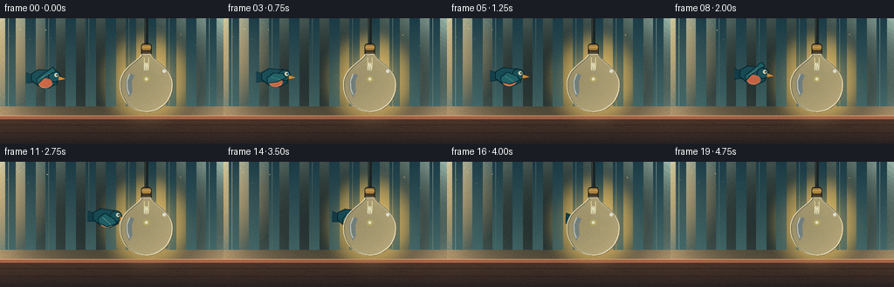
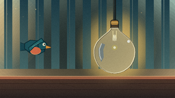
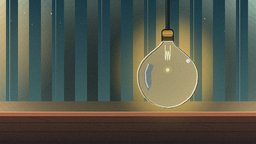
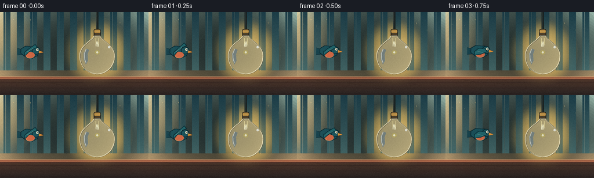

CODING AGENTS AS PIXEL WORLD MODELS
traex/DeepSeek-V4.1-Flash · dynamic_spatial_relationship_0041
点击播放 · 原生 RGB 像素
逐轮保存的候选
回放视频、检查图与代码变化。
每份候选均可单独播放。实际图片检查记录在下方工具轨迹中。
候选 01播放与检查图
点击播放 · 原生 RGB 像素

展开代码变化
--- 上一保存版本
+++ 本次保存版本
@@ -0,0 +1,269 @@
+from pathlib import Path
+import math
+
+import numpy as np
+from PIL import Image, ImageDraw, ImageFilter
+
+import artifact_io
+
+
+ROOT = Path(__file__).resolve().parent
+WIDTH = 256
+HEIGHT = 144
+FRAMES = 20
+SCALE = 4
+W = WIDTH * SCALE
+H = HEIGHT * SCALE
+
+
+def smoothstep(value):
+ value = max(0.0, min(1.0, value))
+ return value * value * (3.0 - 2.0 * value)
+
+
+def vertical_gradient(top, bottom, height):
+ y = np.linspace(0.0, 1.0, height, dtype=np.float32)[:, None]
+ top = np.asarray(top, dtype=np.float32)
+ bottom = np.asarray(bottom, dtype=np.float32)
+ rows = top[None, :] * (1.0 - y) + bottom[None, :] * y
+ return np.repeat(rows[:, None, :], W, axis=1).astype(np.uint8)
+
+
+def radial_glow(size, center, radii, color, strength=1.0):
+ width, height = size
+ yy, xx = np.mgrid[0:height, 0:width].astype(np.float32)
+ dx = (xx - center[0]) / radii[0]
+ dy = (yy - center[1]) / radii[1]
+ falloff = np.clip(1.0 - (dx * dx + dy * dy), 0.0, 1.0) ** 2.2
+ rgba = np.zeros((height, width, 4), dtype=np.uint8)
+ rgba[:, :, :3] = np.asarray(color, dtype=np.uint8)
+ rgba[:, :, 3] = np.clip(falloff * 255.0 * strength, 0, 255).astype(np.uint8)
+ return Image.fromarray(rgba, "RGBA")
+
+
+def bezier_points(points, steps=36):
+ p0, p1, p2, p3 = points
+ result = []
+ for i in range(steps + 1):
+ t = i / steps
+ u = 1.0 - t
+ x = u**3 * p0[0] + 3 * u**2 * t * p1[0] + 3 * u * t**2 * p2[0] + t**3 * p3[0]
+ y = u**3 * p0[1] + 3 * u**2 * t * p1[1] + 3 * u * t**2 * p2[1] + t**3 * p3[1]
+ result.append((x, y))
+ return result
+
+
+def make_background():
+ wall = vertical_gradient((29, 62, 73), (75, 112, 111), 452)
+ floor = vertical_gradient((83, 57, 44), (42, 35, 34), H - 452)
+ base = np.vstack((wall, floor))
+ image = Image.fromarray(base, "RGB").convert("RGBA")
+ draw = ImageDraw.Draw(image, "RGBA")
+
+ # Soft, wide wallpaper bands keep the backdrop dimensional without competing
+ # with the two small subjects.
+ for x in range(-20, W + 80, 92):
+ draw.rectangle((x, 0, x + 43, 450), fill=(181, 215, 200, 8))
+ for x in range(38, W, 184):
+ draw.line((x, 0, x, 450), fill=(220, 237, 217, 15), width=2)
+
+ # A pale band of reflected daylight and a grounded terracotta baseboard.
+ draw.rectangle((0, 405, W, 452), fill=(230, 193, 140, 15))
+ draw.rectangle((0, 448, W, 466), fill=(170, 103, 73, 255))
+ draw.line((0, 448, W, 448), fill=(237, 177, 125, 150), width=3)
+ draw.line((0, 466, W, 466), fill=(76, 42, 37, 170), width=4)
+
+ # Quiet wood floor seams.
+ for y in (490, 526, 566):
+ draw.line((0, y, W, y), fill=(43, 29, 27, 80), width=2)
+ for x, y in ((110, 466), (342, 490), (756, 490), (540, 526)):
+ draw.line((x, y, x + 95, y + 18), fill=(55, 35, 30, 65), width=2)
+
+ # Bulb glow is baked into the wall before the foreground glass is drawn.
+ glow = radial_glow((W, H), (670, 284), (232, 238), (255, 210, 112), 0.62)
+ glow = glow.filter(ImageFilter.GaussianBlur(23))
+ image = Image.alpha_composite(image, glow)
+ halo = radial_glow((W, H), (670, 286), (130, 134), (255, 238, 177), 0.36)
+ halo = halo.filter(ImageFilter.GaussianBlur(13))
+ image = Image.alpha_composite(image, halo)
+ return image
+
+
+def draw_bird(size, flap, angle):
+ layer_size = 180
+ layer = Image.new("RGBA", (layer_size, layer_size), (0, 0, 0, 0))
+ draw = ImageDraw.Draw(layer, "RGBA")
+ cx, cy = layer_size // 2, layer_size // 2
+
+ def point(x, y):
+ return (cx + x * SCALE, cy + y * SCALE)
+
+ # Far wing, tucked slightly darker behind the body.
+ far_tip = -8.5 - 6.0 * max(0.0, flap)
+ far_wing = [
+ point(-8, -2),
+ point(-1, -4),
+ point(8, far_tip - 1),
+ point(3, far_tip + 4),
+ point(-9, 2),
+ ]
+ draw.polygon(far_wing, fill=(13, 43, 54, 255))
+ draw.line(far_wing + [far_wing[0]], fill=(7, 28, 36, 255), width=3)
+
+ # Forked tail.
+ tail = [point(-13, -3), point(-29, -8), point(-24, 0), point(-30, 7), point(-12, 5)]
+ draw.polygon(tail, fill=(20, 67, 79, 255))
+ draw.line(tail + [tail[0]], fill=(8, 35, 44, 255), width=3)
+
+ # Plump body and head.
+ body = [point(-16, -5), point(-8, -10), point(7, -9), point(14, -3),
+ point(13, 6), point(4, 11), point(-8, 9), point(-16, 3)]
+ draw.polygon(body, fill=(25, 82, 93, 255))
+ draw.line(body + [body[0]], fill=(8, 39, 48, 255), width=4, joint="curve")
+ draw.ellipse((*point(3, -9), *point(17, 4)), fill=(30, 91, 99, 255), outline=(8, 39, 48, 255), width=4)
+
+ # Warm breast catches the bulb light.
+ draw.ellipse((*point(-8, 0), *point(8, 11)), fill=(225, 112, 74, 255))
+ draw.arc((*point(-8, 0), *point(8, 11)), 18, 155, fill=(255, 175, 116, 170), width=3)
+
+ # Beak, eye, and a small highlight.
+ beak = [point(15, -3), point(24, 0), point(15, 2)]
+ draw.polygon(beak, fill=(238, 157, 60, 255))
+ draw.line(beak + [beak[0]], fill=(115, 70, 36, 255), width=2)
+ draw.ellipse((*point(10, -6.5), *point(14.5, -2)), fill=(244, 238, 203, 255))
+ draw.ellipse((*point(12.1, -5.4), *point(14.0, -3.5)), fill=(12, 27, 32, 255))
+ draw.ellipse((*point(12.3, -5.2), *point(13.1, -4.4)), fill=(255, 255, 240, 255))
+
+ # Near wing makes the wingbeat legible at this small resolution.
+ tip_y = -5.5 - 13.0 * flap
+ near_wing = [
+ point(-10, 1),
+ point(-3, -5),
+ point(8, tip_y - 2),
+ point(12, tip_y + 3),
+ point(1, tip_y + 8),
+ point(-9, 7),
+ ]
+ draw.polygon(near_wing, fill=(35, 107, 113, 255))
+ draw.line(near_wing + [near_wing[0]], fill=(8, 44, 53, 255), width=4, joint="curve")
+ draw.line((point(-5, 0), point(5, tip_y + 5)), fill=(109, 169, 160, 190), width=3)
+
+ rotated = layer.rotate(angle, resample=Image.Resampling.BICUBIC, center=(cx, cy))
+ return rotated
+
+
+def paste_bird(frame, center, flap, angle):
+ bird = draw_bird((W, H), flap, angle)
+ x = int(round(center[0] * SCALE - bird.width / 2))
+ y = int(round(center[1] * SCALE - bird.height / 2))
+ frame.alpha_composite(bird, (x, y))
+
+
+def bulb_outline():
+ left = bezier_points(((650, 166), (632, 201), (550, 229), (550, 303))) + \
+ bezier_points(((550, 303), (550, 376), (602, 426), (670, 430)))
+ right = bezier_points(((670, 430), (738, 426), (790, 376), (790, 303))) + \
+ bezier_points(((790, 303), (790, 229), (708, 201), (690, 166)))
+ return left + right
+
+
+def draw_bulb(frame):
+ draw = ImageDraw.Draw(frame, "RGBA")
+ outline = bulb_outline()
+
+ # Suspension cord and softly shaded brass socket.
+ draw.rounded_rectangle((662, -4, 678, 170), radius=7, fill=(27, 33, 32, 255))
+ draw.line((665, 0, 665, 166), fill=(90, 102, 91, 150), width=2)
+ draw.rounded_rectangle((646, 116, 694, 180), radius=13, fill=(76, 64, 46, 255),
+ outline=(30, 30, 27, 255), width=4)
+ draw.rounded_rectangle((649, 122, 691, 145), radius=8, fill=(190, 143, 67, 255))
+ draw.line((651, 132, 689, 132), fill=(242, 195, 108, 190), width=3)
+ for y in (153, 162, 171):
+ draw.line((652, y, 688, y), fill=(39, 35, 30, 230), width=4)
+ draw.line((653, y + 2, 687, y + 2), fill=(176, 126, 59, 150), width=2)
+
+ # Translucent warm glass: drawn after the bird, producing real occlusion.
+ draw.polygon(outline, fill=(255, 231, 166, 63))
+ draw.line(outline + [outline[0]], fill=(255, 244, 201, 220), width=6, joint="curve")
+ draw.line([(point[0] + 3, point[1] + 2) for point in outline] + [outline[0]],
+ fill=(91, 74, 49, 95), width=2, joint="curve")
+
+ # Filament and inner glow.
+ draw.line((660, 181, 660, 223), fill=(255, 240, 173, 220), width=4)
+ draw.line((680, 181, 680, 223), fill=(255, 240, 173, 220), width=4)
+ coil = []
+ for i in range(27):
+ t = i / 26
+ coil.append((660 + 20 * t, 222 + 18 * math.sin(t * math.pi * 5)))
+ draw.line(coil, fill=(255, 249, 207, 255), width=4, joint="curve")
+ draw.ellipse((653, 264, 687, 294), fill=(255, 232, 136, 80))
+ draw.ellipse((663, 272, 677, 286), fill=(255, 251, 217, 255))
+
+ # Broad reflection follows the left shoulder of the glass.
+ reflection = [
+ (596, 253), (576, 286), (578, 328), (592, 363),
+ (606, 337), (603, 292), (614, 261),
+ ]
+ draw.polygon(reflection, fill=(238, 255, 249, 35))
+ draw.line([(594, 255), (581, 288), (583, 326), (592, 350)],
+ fill=(255, 255, 239, 115), width=5, joint="curve")
+ draw.ellipse((744, 235, 760, 251), fill=(255, 255, 239, 170))
+ draw.ellipse((747, 238, 753, 244), fill=(255, 255, 255, 235))
+
+
+def add_atmosphere(frame, index):
+ draw = ImageDraw.Draw(frame, "RGBA")
+ motes = [
+ (92, 48, 2), (130, 97, 1), (211, 56, 2), (239, 94, 1),
+ (40, 84, 1), (823, 74, 2), (902, 122, 1), (773, 402, 2),
+ ]
+ for i, (x, y, radius) in enumerate(motes):
+ drift_x = 6 * math.sin(index * 0.42 + i * 1.7)
+ drift_y = 3 * math.cos(index * 0.33 + i)
+ alpha = 38 + 18 * math.sin(index * 0.6 + i)
+ draw.ellipse((x + drift_x - radius, y + drift_y - radius,
+ x + drift_x + radius, y + drift_y + radius),
+ fill=(255, 224, 158, int(alpha)))
+
+ # Gentle vignette and a warm left-side light spill.
+ vignette = radial_glow((W, H), (W * 0.51, H * 0.48), (W * 0.72, H * 0.82),
+ (10, 18, 19), 0.15).filter(ImageFilter.GaussianBlur(40))
+ frame.alpha_composite(vignette)
+ spill = radial_glow((W, H), (-20, 180), (310, 280), (255, 205, 134), 0.08)
+ spill = spill.filter(ImageFilter.GaussianBlur(30))
+ frame.alpha_composite(spill)
+
+
+def render_frame(index):
+ frame = make_background()
+ t = index / (FRAMES - 1)
+ eased = smoothstep(t)
+
+ x = 52.0 + (166.0 - 52.0) * eased
+ y = 68.5 - 3.6 * math.sin(math.pi * t) + 1.1 * math.sin(2.0 * math.pi * t + 0.4)
+ flap = 0.62 * math.sin(2.0 * math.pi * (2.8 * t + 0.12))
+ velocity = (166.0 - 52.0) * (6.0 * t * (1.0 - t)) / (FRAMES - 1)
+ angle = -2.2 - 0.16 * velocity + 1.6 * math.sin(2.0 * math.pi * t + 0.3)
+
+ # The bird sits between the glowing wall and the foreground glass.
+ paste_bird(frame, (x, y), flap, angle)
+ draw_bulb(frame)
+ add_atmosphere(frame, index)
+
+ rgb = frame.convert("RGB").resize((WIDTH, HEIGHT), Image.Resampling.LANCZOS)
+ pixels = np.asarray(rgb).astype(np.float32)
+
+ # Fine, deterministic grain keeps flat illustration areas from banding.
+ rng = np.random.default_rng(4100 + index)
+ grain = rng.normal(0.0, 1.45, (HEIGHT, WIDTH, 1)).astype(np.float32)
+ pixels = np.clip(pixels + grain, 0, 255).astype(np.uint8)
+ return pixels
+
+
+def main():
+ frames = np.stack([render_frame(index) for index in range(FRAMES)])
+ artifact_io.save(frames, ROOT)
+
+
+if __name__ == "__main__":
+ main()
可观测工具轨迹
实际执行的命令与返回图片。
命令 1exit 0
/bin/bash -c "pwd && rg --files -g 'prompt.txt' -g 'GENERATION_RULES.md' -g 'task_spec.json' -g '"'!**/.git/**'"'"
命令 2exit 0
/bin/bash -c 'ls -la'
命令 3exit 0
/bin/bash -c 'cat prompt.txt'
命令 4exit 0
/bin/bash -c 'cat GENERATION_RULES.md'
命令 5exit 0
/bin/bash -c 'cat task_spec.json'
命令 6exit 0
/bin/bash -c "sed -n '1,240p' artifact_io.py"
命令 7exit 0
/bin/bash -c 'python generate.py'
命令 8exit 0
/bin/bash -c 'python -m py_compile generate.py && ls -lh generate.py index.html pixels.npz inspection.png transition_check.png'
命令 9exit 0
/bin/bash -c "python - <<'PY'
from pathlib import Path
import numpy as np
p = np.load('pixels.npz')['pixels']
print('pixels', p.shape, p.dtype, 'range', int(p.min()), int(p.max()))
print('frame files', len(list(Path('frames').glob('*.png'))))
print('index bytes', Path('index.html').stat().st_size)
print('changed pixels first->last', int(np.count_nonzero(p[..., 0] "'!= p[..., -1])))
PY'视觉工具实际返回图片 1

视觉工具实际返回图片 2

视觉工具实际返回图片 3

视觉工具实际返回图片 4

保存候选 1 份；完成命令 9 次；可验证图片返回 4 张。原始 API 响应与完整日志保留在本地。